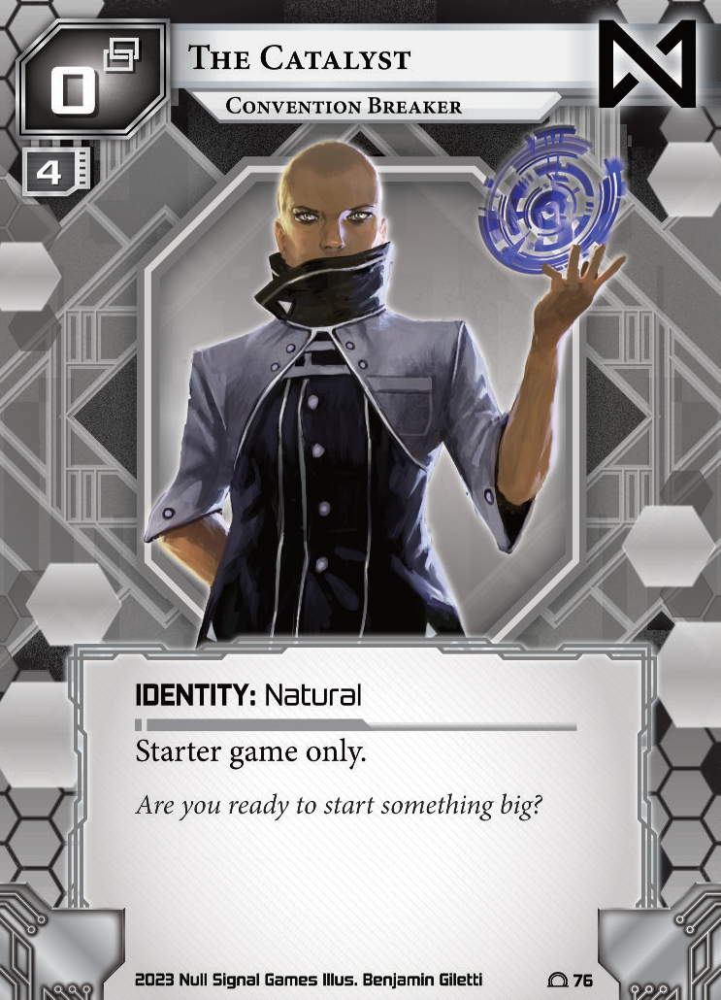

Reading Time: 30 minutes.
Welcome! If you're reading this, you should already have a copy of the Netrunner system gateway starter decks! Whoever is introducing you to Netrunner should have given you these: if they haven't go and bother them about it now.
In Netrunner, one player will take on the role of a corporation, who is attempting to accomplish goals in the name of profit and futhering their capitalistic goals. Meanwhile, the other player will be the runner: a renegade hacker attempting to break into the corporations servers and steal their secrets for fun and profit.
| Tutorial Corporation | Tutorial Runner | |
|---|---|---|
|  |
Most of the time, each players identity will be critical to their playstyle, and will tell you a lot about how the game is likely to play.
For the tutorial game, your identities are blank cards and so wont have this kind of impact—after all you don't know which play style you'll enjoy yet.
This tutorial is going to take you through every single card in the starter decks. It's a good idea to look at and understand them as best as you can while you read this article. If you want a closer look, you can click on a card to see a larger view of it.
Each player will start the game with 5 cards and 5 credits, and may choose to mulligan their starting hand once, shuffling their entire hand back into their deck and drawing a fresh hand of 5 cards. The corp goes first.
There are three primary resources in netrunner, clicks (), credits (), and cards. Clicks are action points, on their turns the runner will gain and the corp will gain . Credits are a general purpose resource used to pay for many things in netrunner. The following basic actions are available at all times:
While the corp has one fewer than the runner, they must make a mandatory draw at the start of each of their turns which does not cost them a click. If the corps deck is empty when they are forced to draw for turn, they lose the game. The runner only draws cards when they take the basic action to draw a card, or use another card with a draw instruction.
When a card is installed it is placed into the play area, and will remain there until it is destroyed and sent to the discard pile. A large part of the asymmetry of Netrunner comes from the difference between how the corp and runner install cards. When the runner installs cards, they pay their cost and place them into the play area face up with no specific structure to where they are placed. When the corp installs cards they pay no cost (with some exceptions) and place them into the play area face down and organised into columns called servers.
When a card is played it is placed into the play area, then its effect resolves, then it is moved into the discard pile.
Running and advancing will be explained later in this tutorial.
At the end of your turn, if you have more than 5 cards in hand, discard down to 5 cards.
Agendas are the projects the corporation wants to complete (and "score"), and that the runner wants to "steal" information about and put a stop to.
Each agenda has two main printed numbers both in the top half of the card overlapping its art box. The one in the top right is the "advancement requirement" of the agenda, the one in the bottom left is the "agenda point value" of the agenda.
In order for the corporation to score the agenda, it must have a number of advancement counters on the card equal to or greater than the advancement requirement of the agenda. When the corp takes the basic action to advance a card, they may place one advancement counter on an agenda (or certain other cards with an ability that allows them to be advanced). Once an agenda has enough advancement counters on it, the corp may add it to their score during their turn.
Only installed cards can be advanced, and so in order to advance their agendas the corporation will need to install them in the play area in a remote server. Each remote server (column of cards) can have at most one agenda in its root (the end of the column closest to the corp).
Unlike the corp, the runner does not care about the advancement requirement of an agenda. In order to steal it, all they need to do is access it. To access an agenda, they must breach the server it is in. To breach the server, they must run it. This can be done with the basic run action, or through a number of cards that instruct the runner to run a server.
When an agenda is scored or stolen, it moves into the respective players score area. Each agenda is worth its agenda point value while in a score area. A player wins when their score area has 6 points worth of agendas in it.
Ice are the corps primary tool to prevent the runner from breaching their servers. Ice can be installed protecting servers. Installing Ice costs 1 for each Ice already protecting the root of that server. Ice is always installed in the outermost position protecting a server, furthest from its root.
| Barriers | Code Gates | Sentries |
|---|---|---|
|
||
Ice is installed rotated 90 degrees, which is why their art and their strength number (bottom left) are sideways in the above images.
Like agendas, Ice have two printed numbers. One in the top left of the card, and the other in the bottom left rotated sideways. The number in the top left of the card is the Ices "rez cost", and the sideways number in the bottom left of the card is the Ices "strength".
Like all corp cards, Ice is installed facedown and inactive. In order to use Ice to protect a server it must be rezzed.
During a run on a server, the runner will approach and then encounter each piece of Ice protecting the server root, from the outermost to the innermost Ice. When they approach unrezzed Ice, the corp may pay the printed rez cost to rez that Ice, turning it face up and activating it. Any rezzed Ice that is approached is encountered.
The primary feature of Ice is subroutines. When the runner encounters Ice, the corporation may fire (use) the subroutines on that Ice in the order they are written.
You'll notice some of the subroutines on Ice do nasty things, like deal damage to the runner. When the runner takes damage, they must randomly discard a number of cards from their hand equal to the amount of damage taken. If they must discard more cards than are in their hand, they lose the game. Other subroutines give the corp a benefit, like gaining credits or allowing them to install extra Ice. By far the most common and impactful subroutine is the humble "End the run."
Just three letters, with the power to put a stop to all of the runners grand plans of breaching the server, accessing the cards in the root, and stealing the agenda.
Before subroutines fire, the runner has the opportunity to break them. Disabling them for the current encounter. This is done using a special type of program card called Icebreakers. All the programs in the starter deck are Icebreakers.
| Fracter | Decoder | Killer |
|---|---|---|
| AI | ||
There are three numbers printed on programs. Two in the top left, and one in the bottom left. The larger top left number printed in the circle is the programs install cost. The smaller number in the top left is the programs memory cost. The number in the bottom left is the programs strength.
In order to install a program, the runner must pay its install cost.
Each runner identity has a memory limit. For The Catalyst this is 4. After installing a program if the total memory cost of all installed programs is greater than their identities memory limit, the runner must trash (discard) programs until the total memory cost of all installed programs is equal to or less than their identities memory limit.
Ice and Icebreakers each have subtypes. Ice subtypes indicate the types of effects the Ice is likely to do, and certain Icebreaker subtypes are required to break each type of Ice.
Icebreakers have "Interface" abilities printed on them. These abilities can only be used during an encounter, when the Ice being encountered has strength equal or less than the strength of the Icebreaker.
For this reason most Icebreakers have a paid ability that allows them to improve their own strength, and an interface paid ability that breaks some number of subroutines. At the end of each encounter, the strength of an Icebreaker resets to its printed strength, and broken subroutines are repaired. Breaking a subroutine and improving an Icebreakers strength are both temporary effects that end when an encounter ends.
After passing an Ice, whether the subroutines were broken or not, the runner may choose to jack out: ending the run without risking an encounter with any futher Ice.
In this example, the corp has a remote server with one unrezzed card in its root which might be an Agenda, with one unrezzed Ice protecting it. The runner has a cleaver installed.
The runner uses the basic action to run any server, and chooses to run the server highlighted in this example. They aproach the outermost Ice protecting the server, in this case the single unrezzed Ice. The corp decides to pay three credits to rez the Ice.
Because the palisade is protecting a remote server, it gains +2 strength from its static ability. This means it has four strength in total, which is more than the Cleavers three strength. The runner uses the cleavers second paid ability, spending 2 credits to increase the Cleavers strength by one. The cleaver now has four strength, which is equal to or greater than the Palisades four strength, and thus the runner can spend one more credit to use the Cleavers first paid ability, breaking up to two barrier subroutines. Palisade is a barrier, and so the runner targets the Palisades first (and only) subroutine: "End the run."
Because all subroutines are broken, the corp has no subroutines to fire. The encounter ends, and the cleaver resets to three strength, and the subroutines on the palisade are no longer broken. The runner decides not to jack out, and instead approaches the root of the server. With no more defensive Ice, the run is declared successful, and the runner breaches the server: accessing all the cards inside.
The card was an offword office. Because this is an Agenda, the runner steals it, adding it to their score area and bringing them two points closer to winning the game!
It costs the runner and the corporation credits to install programs and ice, rez ice, and break subroutines. The game would be very slow if the only supply of credits was from both players clicking for credits, and the five they each start with. Similarly, if each player has to click (or draw for turn in the case of the corp) to draw all their cards, it would take a long time to find the Agendas, Ice, and Icebreakers each player needs to win the game.
Both players have access to cards with "play abilities". These cards are called Events for the runner and Operations for the corporation.
| Runner Events | ||
|---|---|---|
| Corp Operations | ||
Events and Operations have one printed number in the top left, this is their play cost.
Both players can use the basic action to play a card from their hands, paying the printed play cost on a card, and resolving its effects before trashing the Event or Operation used.
Play abilities aren't the only way that players can maintain their economy, each side also has a type of installable card which can assist them with progressing through the game and paying for all of their costs.
| Runner Resources | ||
|---|---|---|
| Corp Assets | ||
Resources have their install cost printed in the top left. Assets have a rez cost printed in the top left, and a trash cost printed in the bottom right.
Assets must be rezzed for their abilities to be used. It does not cost anything to install an asset. Assets are installed in the root of a server in the same fashion as Agendas. A server may only have one Asset OR one Agenda in its root.
If the runner accesses an asset, they may pay its pritned trash cost to trash it: uninstalling it and sending it to the corporations discard pile.
You'll notice Red Team referrs to central servers. So far in this tutorial, we have only spoken about remote servers. In addition to any remote servers they have created to install their assets and agendas in, the corporation also has three central servers: Archives, HQ, and R&D. These servers can be defended by Ice just like remote servers.
Archives is the corporations discard pile. If they discard a card that the runner could not see then it is discarded face down. When the runner breaches archives, all the facedown cards within are revealed, and all agendas in archives are accessed and may be stolen.
HQ is the runners hand, and is represented on the table by their Identity card. When a runner breaches HQ, they may access one card at random from the runners hand.
R&D is the runners deck. If the runner breaches R&D, they may access the top card of the runners deck.
Red Team is not the only card with an ability that instructs the runner to run a server. Run Events allow the Runner to make a run without using their basic action to run any server. These Events give additional upsides to the runner during or after that run.
With Jailbreak, each card must be accessed separately. The runner must decide if they wish to pay the trash cost on the first card they access before looking at the second card. Cards accessed from R&D must be returned to the top of the deck in the same order they were in before the accesses occured.
In addition to programs, the runner has access to hardware cards. These typically provide passive benefits, and differ from programs in that they do not require memory units to install. In fact, they often grant the runner additional MU to work with.
The number in the top left is the install cost of a hardware card, and must be paid to install it.
With that, you've now seen all of the cards in the runners starter deck. If you're curious how many of each are present, you can look at the very bottom of each card. The number of little white circles on the right hand side of the card footer (where the copyright notice is) is the number of each card present in the tutorial deck.
The corporation has one more type of card that can be installed in the root of servers, but unlike agendas and assets these cards are not limited to one per server, and can even be installed onto central servers!
As with other corporation cards, the number in the top left is the cost to rez this asset. You must rez an upgrade for its effect to be active. In the case of manegarm skunkworks, you will want to rez it at the last possible moment: after the runner has declared they will not jack out, but before they approach the root of the server.
When breaching a server, all upgrades are accessed in addition to any other cards accessed in the root of the server. The runner may choose the order that they access cards in the server root.
The corp has another kind of asset which is not economical in nature, these are called ambush assets. The tutorial deck includes one of these. It pretends to be an agenda, until the moment the runner decides they want to access it!
As with other corporation cards, the number in the top left is the cost to rez this asset. Not that you are ever likely to rez an Urtica Cipher and reveal its secret and murderous plans.
There is one last card to go in the corporation deck, and it's an important one.
Seamless launch is an Event card that allows the corporation to put two advancement counters onto a card, for the cost of one click and one credit. Typically it takes two clicks and two credits for the same number of advances. This is critically important, as one of them can allow the corporation to score an Offworld Office without ever having to place advancement counters on it before the turn they score it. Similarly, two of them can be used together to score a Send a Message without ever advancing it. This strategy is called "Never Advance" and is useful as advancing an Agenda on the turn before you score it gives the runner an opportunity to run a server, knowing the card in it is either an Agenda or an Urtica Cipher.
The following is a full timing structure, that you can reference if you are confused about the order of events. Whoevers turn it is is considered to be the active player, and they may order their conditional abilities and use their paid abilities before the other player in each timing window where it is possible.
YOU DO NOT NEED TO KNOW THIS. NOT KNOWING THE EXACT TIMINGS OF THINGS OCCURING WILL NOT BREAK THE GAME. ALL CARDS IN THE TUTORIAL ARE SIMPLE AND HAVE NO COMPLEX INTERACTIONS.
Any paid ability that has a cost which begins with "" is considered an action, and may only be used at the point in the timing when sides are instructed to take an action.
The following is a simplified overview, reviewing all elements of timing that cannot come up in the starter deck tutorial game.